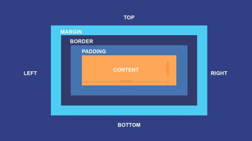

CSS: What's The Difference Between Margin, Border, and Padding?
The margin property controls the space outside of an element, and the padding property controls the space inside an element.
Box Model

The concept that every HTML element is a box with four distinct layers:
- Margin
- Border
- Padding
- Content
Margin
1) Changes the position of an element on the page:
(margin: 80px)
Margins can move an element up, down, left or right on a page.
The element on the left is centered with a margin of 80px.
2) Sets the distance between elements:
(image 1)
(image 2)
Margins set the amount of whitespace between nearby elements.
This allows us to add space between images and/or text.
3) Overlap elements:
Overlap
Overlap
Overlap
Negative margins allows us to overlap multiple elements.
Border
Border
The border property allows us to add and style a line around the padding of our content.
Padding
1) Adds space between content and border.
This is how padding is used most of the time.
Content (30px padding)
Content (60px padding)
2) Adjusts the size of an element.
Increasing the value of the padding will keep the content the same size while increasing the space around it.